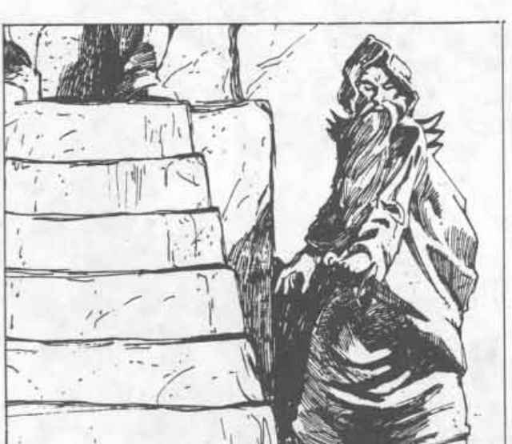

Jaran Krimeeah：法师谷之主 · Jaran Krimeeah: The Valley of the Mage
法师谷 The Valley of the Mage
Jaran Krimeeah
山谷法师、卓越法师、黑色之人——法师谷
 |
|
法师谷的领主对外界而言是个神秘人物。很少有人与他交谈过，而其中更少有人活着讲述这段经历。所谓目击者的故事甚至在法师的外貌或说话方式等事情上都互不一致，因此显然要么人们在撒谎，要么法师至少有一部分时间会用法术伪装外貌。
法师谷领主出生在远离他后来据为己有的山谷之地，即大王国的首都。Jaran Krimeeah 是他当时的名字，是大王的亲属，接受了王国所能提供的最佳魔法训练。
随着魔法技艺迅速增长、力量不断增强，他开始对自己的生活感到不满。他问自己：那个连一个一环法术都不会施展的表亲，为什么应该成为大王国之王？Jaran 认为法师是人类的精英，拥有奇妙的力量，理应注定统治一切地方。
于是，年轻法师集结力量，试图发动政变。不幸的是，对 Jaran Krimeeah 而言，他的魔法技艺远远超过了宫廷政治技艺。他拉拢的指挥官后来证明几乎没有真正的权力；当他们试图向自己本应指挥的军队下令时，士兵向更高层询问命令，而得到的答复是不必服从。整个荒谬的计划几乎一开始就死去了。
王室没有处死 Jaran Krimeeah。相反，他们放逐了 Jaran，迫使他发誓永不公开自己与王室的关系，永不再返回大王国，也不再介入大王国的事务。
被迫进入残酷世界的 Jaran Krimeeah（当时自称黑色之人）很容易在土匪王国找到工作，为那里的粗野统治者施放法术。他开始相信大王国的代理人正在追捕自己，变得痴迷于针对看不见敌人的魔法防御，并离开职务，专心投入魔法研究。
他穿越盾之地、角之社领地、弗尤伦迪、维伦纳、凯奥兰、乡绅领和斯特里奇，一直寻找更多法术与魔法知识。最后，在杰弗大公国，他找到了如今由自己统治的隐秘山谷。“这里，”他对自己说，“就是我一直在寻找的地方。一个安全、稳固、隐蔽的基地，容易防守，也没有任何在乎它的人声称拥有它。如果我接管这里，我终于能安心进行研究了！”
他很快赢得了山谷精灵和当地侏儒的好感。当他终于尽可能委婉地暗示，也许自己会比遥远而漠不关心的杰弗大公更适合做领主时，他们一致宣布他为领主。
在精灵和侏儒热情的帮助下，山谷法师大幅加固山谷入口，既进行物理加固，也进行魔法加固。终于安全之后，他几乎把全部精力投入魔法研究，让精灵和侏儒自行处理自己的事务。他只处理那些他们无法解决的问题。
山谷法师是个高瘦的男人，有卷曲的棕发、浅橄榄色皮肤和石板色眼睛。他只对魔法研究和新法术感兴趣，并且倾向于把不施法者视为智力有缺陷的人。他如此确信施法者（当然尤其是法师）的优越性，以至于连武器都不使用。他认为匕首、飞镖和非魔法法杖都不配法师使用。
他对魔法的执念使自己陷入了一些非常危险的处境。每当听说某本法术书中有自己尚未掌握的法术，他几乎愿意付出任何代价去得到它，即使这意味着传送进一座废墟城市去和巫妖战斗。
他对使用魔法的渴望如此彻底，甚至正在准备战胜死亡——但不是成为巫妖。他认为任何形式的亡灵状态都不配法师身份。相反，他计划一直工作到感觉自己的肉体开始严重衰败，然后把来自暗影位面的暗影物质注入身体，成为一名影魂。作为影魂，他知道自己永远不会再提升等级，但能够存活数百年并进行更多魔法研究，这点代价很小，尤其是因为他打算到那时达到 24 级。
法师拥有几十本法术书和大量魔法物品。其中包括羽落戒指、法术反射戒指、法术储存戒指和法师戒指。他有一根法师法杖、一根火焰魔杖、一根寒霜魔杖、一本无限法术之书、一件位移斗篷、一副特殊的万象牌（其中完全没有好牌，“抽一张——随便哪张！”）、一颗洞察宝石、一面生命囚禁镜和一顶伪装帽。这些只是已知属于他的物品，可能还有许多他没有透露的物品。
山谷法师痴迷于大王国的代理人。事实上，他把山谷中的任何外来者都视为大王国派来伤害他的潜在代理人。因此，他执着于防御，也渴望成为影魂。他在山谷之外的国家维持着一个庞大的刺客网络，其中大多是伪装成人类的山谷精灵。他们执行各种任务，例如寻找旧敌，但主要任务是无休止地搜寻大王国的代理人。如果法师确信根本不存在这类代理人，他会遭受毁灭性的打击。
上一节：法师谷 · The Valley of the Mage
下一节：Tysiln San：法师谷第一守护者 · Tysiln San: First Protector of the Valley of the Mage